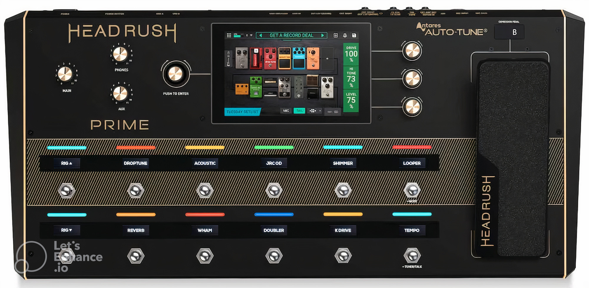

Go Home
Go Back
New flagship pedalboard system announced
HeadRush have today announced the release of their new flagship multi-effects pedalboard system, the HeadRush Prime. This latest all-in-one system greatly expands on the capabilities of the HeadRush Pedalboard, introducing onboard amp cloning capabilities, a suite of vocal processing tools that include Antares’ Auto-Tune, Bluetooth connectivity and a huge library of built-in amps, cabinets and effects.
The HeadRush Prime also features a powerful quad-core DSP processor and a 7-inch high-resolution touchscreen interface, allowing for fast and easy navigation of the system’s various parameters and features. The amp cloning feature, which is exclusive to the Prime, allows users to create and store up to 200 custom amp models, making it a powerful tool for guitarists who need a wide range of tonal options.
Additionally, the system’s vocal processing tools are designed to provide professional-quality results, with features such as pitch correction, harmonization and more. Overall, the HeadRush Prime is an impressive and versatile system that offers a wide range of tools and capabilities for guitarists and vocalists alike.
Published 21/3/23
Music Category
Reference: https://www.soundonsound.com/news/headrush-prime-modelling-processor